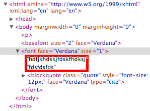

Browser Bugs¶
Gecko¶
- Gecko 1.8 needs a <br> tag inside an element with contenteditable="true", even if the element is empty! If no such element existes, Gecko automatically adds it. These elements can be recognized by the proprietary attribute _moz_editor_bogus_node: <br _moz_editor_bogus_node="TRUE" _moz_dirty=""/>
- Gecko 1.9 will always insert this <br> tag, if contenteditable="true" is set. Even if the element contains content! This <br> tag is removed, as soon as any input is entered by the user: https://bugzilla.mozilla.org/attachment.cgi?id=119342
- Undo/Redo : it could happen that 2 content changes occuring right after another leading Gecko to remove both of these 2 changes in one undo step. This is especially important for the undo/redo stacks of the HtmlArea.
Internet Explorer¶
- If you want to use the pasteHTML() function, you have to select the textrange first using select().
Webkit/Safari¶
Setting a background color for text on collapsed selection is not working like in Gecko or IE. Instead of setting the background color and allowing the user to type ahead in the new background color (like in Gecko/IE) nothing happens. The current solution in the HtmlArea is to select the word currently under the caret and to set the background color on this selection. Working on a user-selection works as expected.
- Deleting a block element (e.g. an <p> tag) can cause an element to contain two text nodes:This wrong behavior can cause problems with selections.